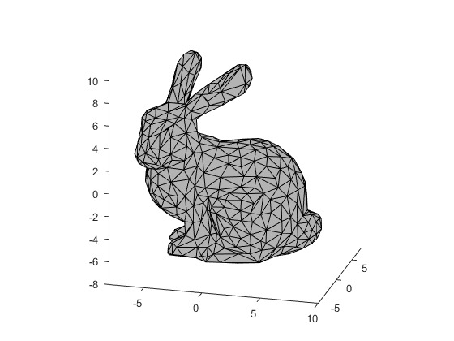
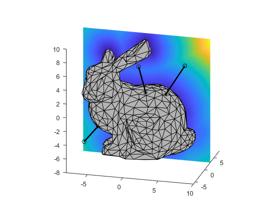
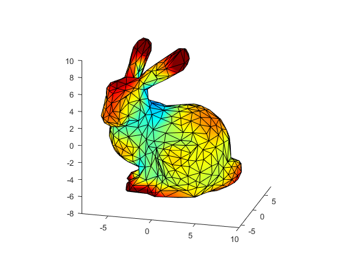
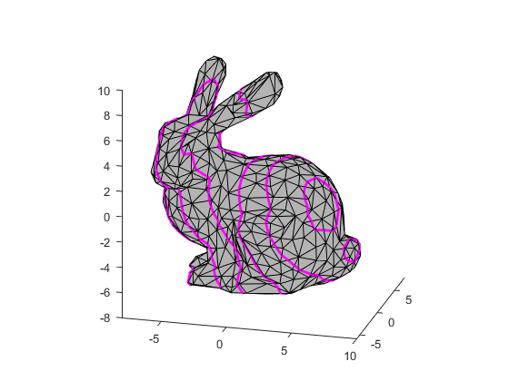
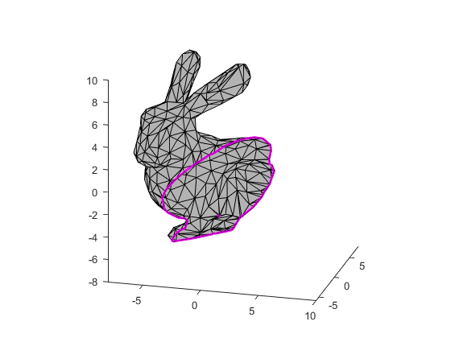

Contents
Read data
mesh = readMesh('bunny_F1k.ply');
figure; hold on; axis equal; view(3);
drawMesh(mesh, 'faceColor', [.7 .7 .7]);
axis([-8 10 -6 8 -8 10]);
view(15, 20);

Display face normals
normals = meshFaceNormals(mesh);
centros = meshFaceCentroids(mesh);
figure; hold on; axis equal; view(3);
drawMesh(mesh, 'faceColor', [.7 .7 .7]);
axis([-8 10 -6 8 -8 10]);
view(15, 20);
drawArrow3d(centros, normals);

Distance point mesh
point = [8 -3 8;2 -5 8;-6 -4 -4];
[dist, proj] = distancePointMesh(point, mesh);
lx = linspace(-8, 10, 181);
lz = linspace(-8, 10, 181);
[x, z] = meshgrid(lx, lz);
y = ones(size(x)) * 3;
pts = [x(:) y(:) z(:)];
dists = distancePointMesh(pts, mesh);
distMap = reshape(dists, size(x));
figure; hold on; axis equal; view(3);
drawMesh(mesh, 'faceColor', [.7 .7 .7]);
axis([-8 10 -6 8 -8 10]);
view(15, 20);
surf(x, y, z, distMap, 'linestyle', 'none');
drawPoint3d(point, 'ko');
drawPoint3d(proj, 'k*');
drawEdge3d([point proj], 'color', 'k', 'linewidth', 2)

Curvature map
[k1, k2] = meshCurvatures(mesh.vertices, mesh.faces);
figure; hold on; axis equal; view(3);
drawMesh(mesh, 'VertexColor', k1 .* k2);
axis([-8 10 -6 8 -8 10]);
view(15, 20);
set(gca, 'clim', [-0.01 0.01]);
colormap jet;
compute adjacencies
compute edge tensors
[********************]
average vertex tensors
retrieve curvatures
[********************]

Plane intersection
direction = normalizeVector3d([2 -1 1]);
positions = -10:2:10;
figure; hold on; axis equal; view(3);
drawMesh(mesh, 'faceColor', [.7 .7 .7]);
axis([-8 10 -6 8 -8 10]);
view(15, 20);
for iPos = 1:length(positions)
planeOrigin = [0 0 0] + positions(iPos) * direction;
plane = createPlane(planeOrigin, direction);
polys = intersectPlaneMesh(plane, mesh);
drawPolygon3d(polys, 'lineWidth', 2, 'color', 'm');
end

Clip mesh with a plane
plane = createPlane([0 0 0], [-5 5 3]);
[v2, f2] = clipMeshByPlane(mesh, plane);
figure; hold on; axis equal; view(3);
axis([-8 10 -6 8 -8 10]);
drawMesh(v2, f2, 'faceColor', [.7 .7 .7]);
view(15, 20);
boundary = meshBoundary(v2, f2);
drawPolygon3d(boundary, 'linewidth', 2, 'color', 'm');
